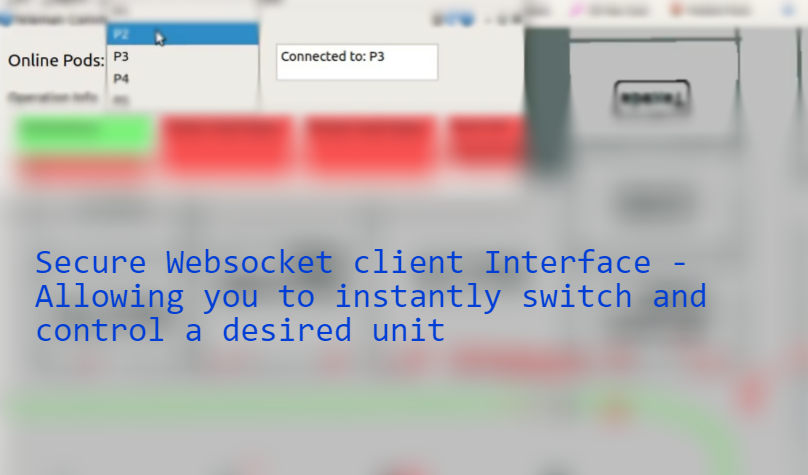

WORK PROJECT / CLOUD & APIS
Fleet connectivity on AWS
A cloud backend supporting live robot status and persistent remote connections.
Project context
Remote fleet tools need current robot information and reliable communication. I proposed and developed a cloud system that connected fleet data with remote client applications.
My contributions
- Centralized static and real-time fleet data in cloud-hosted databases.
- Supported live position updates and feedback for customer-facing tools.
- Implemented automatic reconnection to reduce manual reinitialization after connection loss.
- Established a foundation for coordination between multiple units.

